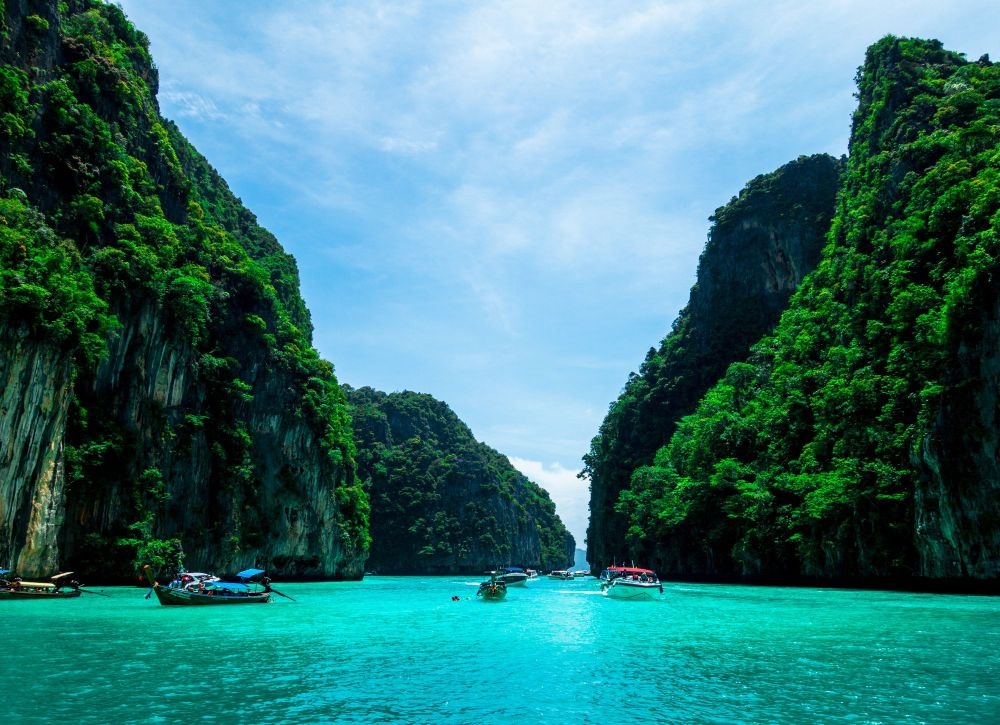

Estimated daily budget: $50
Best time to visit: January-April
Thailand is a vibrant Southeast Asian country renowned for its tropical beaches, ornate Buddhist temples, rich culture, and world-famous cuisine.
Quick Facts
Budget
$50/day
Best Time
Jan-Apr
Region
SE Asia
Why Thailand?
Thailand offers an incredible contrast of experiences, where you can explore centuries-old Buddhist temples in bustling cities and relax on pristine, tropical island beaches all in one trip. Beyond its breathtaking landscapes, travelers are drawn by its world-renowned culinary scene, affordable luxury, and the legendary warmth and hospitality of its people.
Places to Explore
Bangkok
Bangkok captivates visitors with its striking contrast of sacred centuries-old temples, electric night markets, and world-class street food thriving alongside modern skyscrapers and vibrant nightlife.
Chiang Mai
Chiang Mai offers a serene, culture-rich escape nestled in northern Thailand's mountains, where you can explore ancient Lanna temples, vibrant night bazaars, and lush rainforest sanctuaries.
Krabi
Krabi mesmerizes visitors with its iconic limestone karst cliffs, turquoise waters, and idyllic offshore islands, making it a paradise for beach lovers, island hoppers, and outdoor adventurers.
Travel Tips
- Complete the mandatory Thailand Digital Arrival Card (TDAC) online within three days before your flight.
- Always keep modest clothing on hand to cover your shoulders and knees when entering sacred temples.
- Carry cash in small bills, as local night markets and street food stalls rarely accept credit cards.
